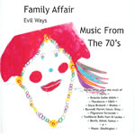

Evil Ways
"Covers"of hits for Santana, Antonio Carlos Jobim, Brubeck - a Jazz, Latin, Baila Album.
 |
Track List (Click highlighted tracks for Free Downloads)
1. Evil Ways (Henry)
2. Meditation/Triste (Jobim/Mendonca)/(Jobim)
3. You Look Good To Me (Wells)
4. La Paloma Azul (The Blue Dove) (Mexican Folk Song arranged by Dave Brubeck)
5. Look To The Sky (Jobim)
6. Bye, Bye Blues (Bennett/Hamm/Lown/Gray)
7. Come To Bombay (Bombay Meri Hei)
8. Ceylonese Wedding Song (Mignonne Fernando)
9. Guadalajara (Guizar)
10. Sri Lanka Baila (Traditional - Arranged by Herb Fernando)
11. Wave/Samba De Orfeo (Jobim)/(Bonfa/Salvet/Camus)
12. On Green Dolphin Street (Kaper/Washington)
|